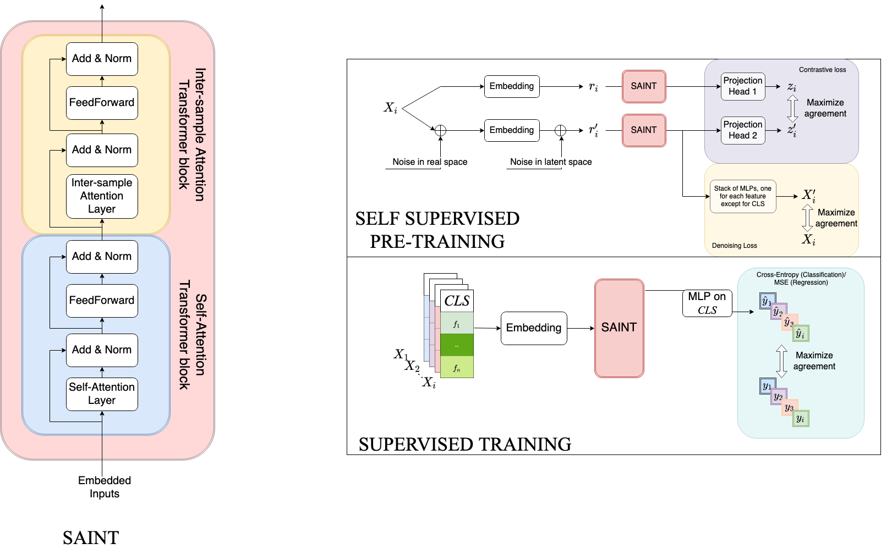
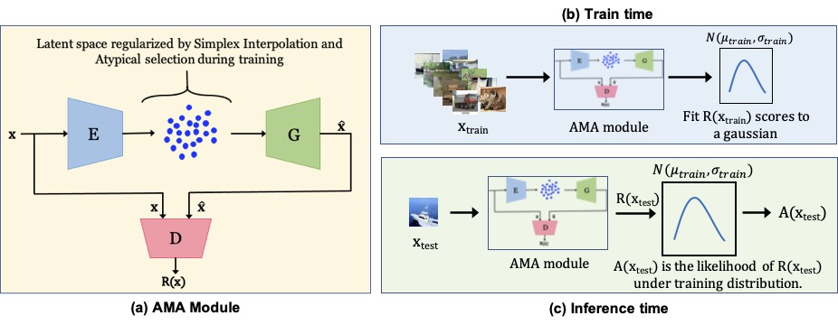
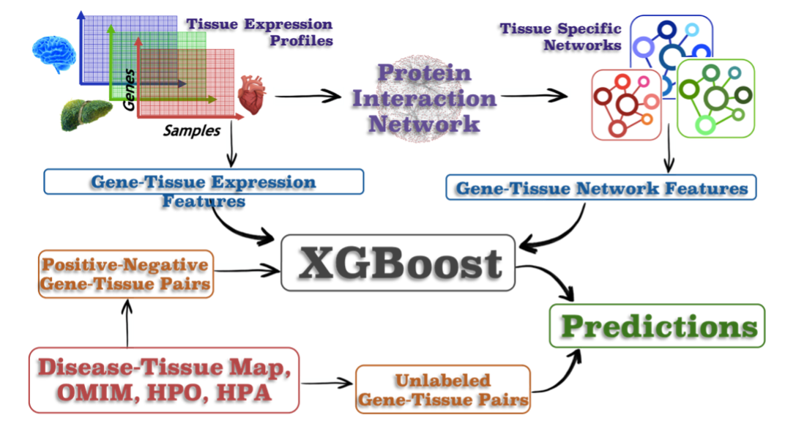
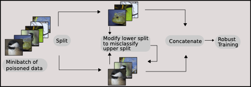

I am a first year Ph.D. student in Computer Science department at University of Maryland, College Park. I am interested in Applied Machine Learning and Computational Biology. Drop me an email if you want to chat!
|  |
SAINT: Improved Neural Networks for Tabular Data via Row Attention and Contrastive Pre-Training
Preprint 2021
Improving predictions on structured tabular data using intersample attention and contrastive learning.
Joint work with Micah Goldblum, Avi Schwarzschild, C Bayan Bruss, Tom Goldstein.
|
|  |
We propose Mirrored Wasserstein loss along with latent space regularization to recognize anomalies in case where there are no/ a few anomalies present during training time.
Joint work with Yexin Wu, Yogesh Balaji, Bhanukiran Vinzamuri, Soheil Feizi.
|
|  |
In this work, we try to understand and predict which genes are important in any given tissue. We show that the gene expression is not the only important factor, but the location of the gene in PPI network also plays a role.
Joint work with Sarthak Sahoo, Arashdeep Singh, Sridhar Hannenhalli.
|
|  |
What Doesn't Kill You Makes You Robust (er): Adversarial Training against Poisons and Backdoors
Preprint
In this paper, we desensitize networks to the effects of poisoning by creating poisons during training and injecting them into training batches.
Led by Jonas Geiping, joint with Liam Fowl, Micah Goldblum, Michael Moeller, Tom Goldstein.
|